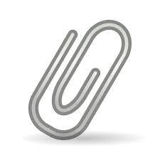

Vamos criar um link
Jogar a âncora, marujo.
Hyperlinks são os conceitos mais antigos do HTML. Permitem que você ligue um ponto a outro no ambiente da Web.
para criar hyperlinks usamos a tag <a> e o atributo href.
Acesse meu perfil GitHub
Outro atributo bem útil da tag de âncora é o hreflang que permite indicar qual é o idioma principal do site para onde o ink está desviando o fluxo de navegação. Isso vai permitir aviar ao navegador e a softwares de tradução como lidar caso o visitante opte por traduzir automaticamente os conteídos.
Site da W3Schools (em Ingles)
Mira no Alvo
Podemos controlar o comportameto de abertura do site ao qual inserimos o link em nossa pagina usando o atributo target, que suporta os seguintes valores:
- _blank vai abrir uma janela em branco
- _self vai abrir na janela ou frame atual (padrão)
- _top vai desfazer os frames e abrir o destino no navegador completo
- _parent similar ao uso de _top
- nome-do-frame caso esteja usando frames, indica o nome da janela a abrir
Continuar navegando no site
Abrir perfil GitHub em nova janela
Esse link é seu ou dos outros?
 Existe um recuso bem interessante para links que é a natureza do desino usando o atributo rel. Esse atributo também tem vaios valores, entre eles vou citar:
- next indica que o link é para a proxima parte do documento atul
- prev indica que o link é para a parte anterior do documeot atual
- author indica que é um link para o site da autor do artigo atual
- external indica que é um link para outro site que não faz parte do dite atual
- nofollow indica que é um link para um site não endossado, como um link pago
Links Internos
Esta e a primeira pagina d site, se você quiser pode acessar a segunda pagina também.
Segunda pagina.
A terceira pagnas são de notícias do dias pagina de notícias
E para fazer Downloads